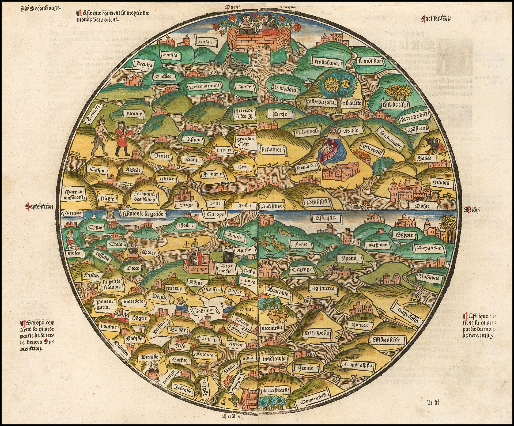
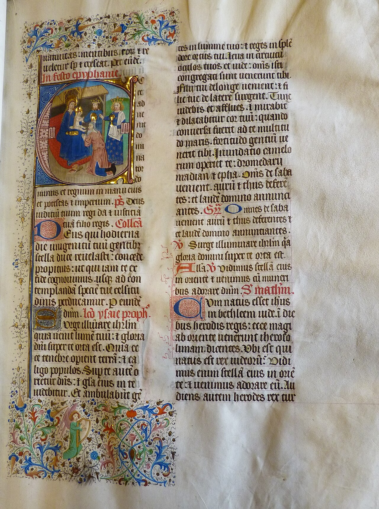
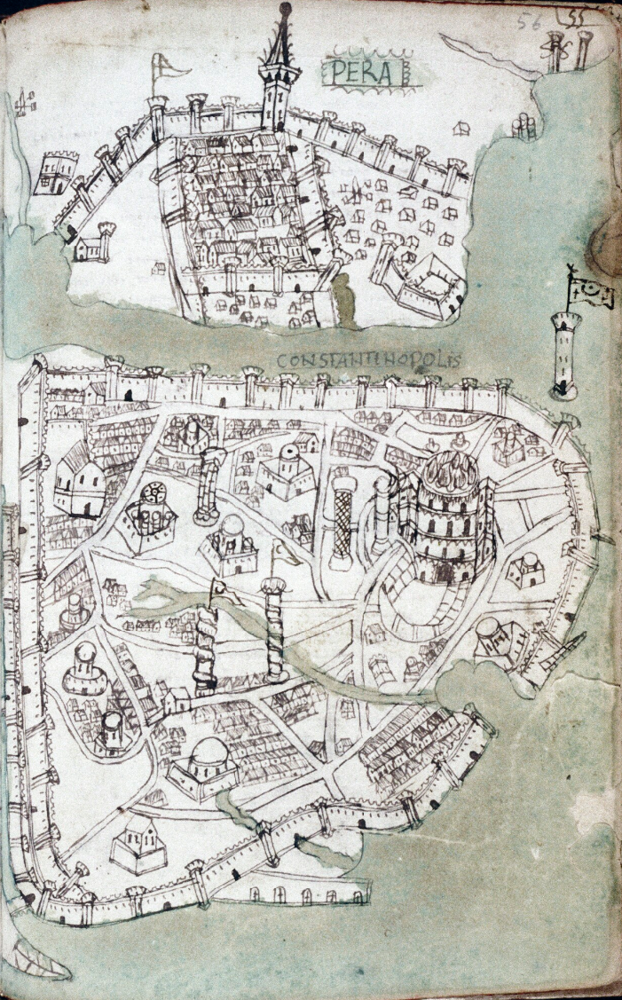

Independent field guide
Know the matchup.
Own the age.
A fast, visual strategy atlas for players who want answers without digging through ten tabs. Explore the full tech tree, compare the field, and ask for a grounded strategy brief.
- Full dataset
- Source-aware
- Mobile ready

Field note 01
Every advantage starts with context.
One searchable command center. Built for quick checks and deep dives.
Choose your edge
Three ways into the atlas
Whether you have thirty seconds or an entire evening, start where the question starts.
Civilization index
Start with an identity
Forge intelligence
Your post-game rabbit hole, made useful.
Ask why a matchup felt impossible, what a technology unlocks, or how two units compare. Forge AI searches the atlas context first, then writes the brief.
Visual archive
History, without the museum hush
Public-domain manuscripts and maps give the atlas its texture without borrowing copyrighted game art.


"The best counter is often the decision you make before the fight."
Civilization index
Choose an identity,
not just a bonus.
Search the full roster, save favorites, open a detail brief, or add two civilizations to the comparison tray.
Open database
Every moving part.
One clear field.
Browse units, buildings, and technologies with quick facts, favorites, side-by-side comparison, and AI context.
Forge AIAtlas-grounded strategy guide
AI can be wrong. Verify exact stats in the atlas before competitive play.